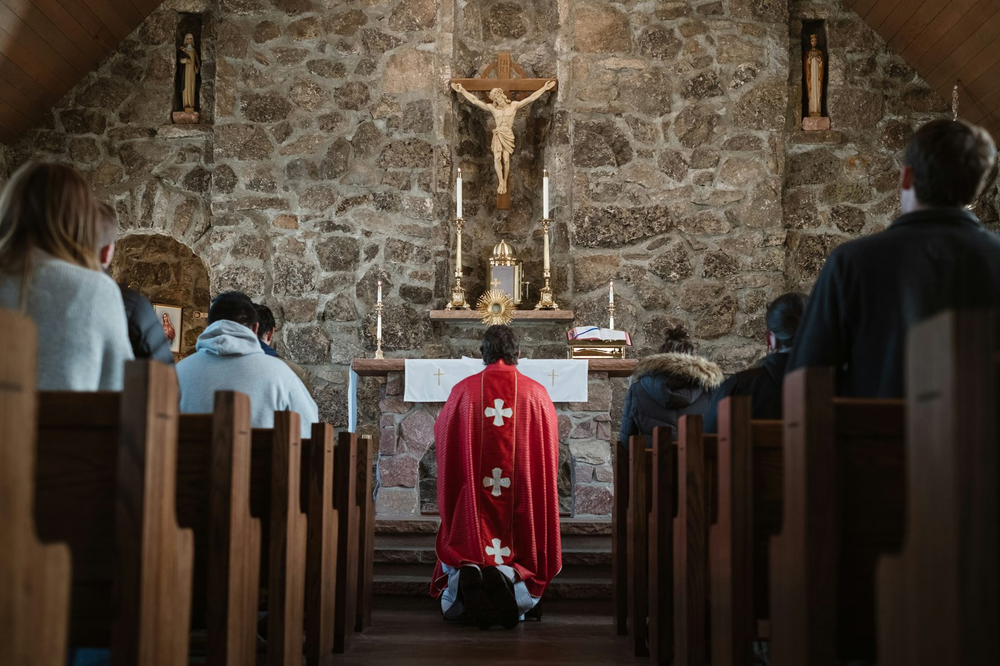
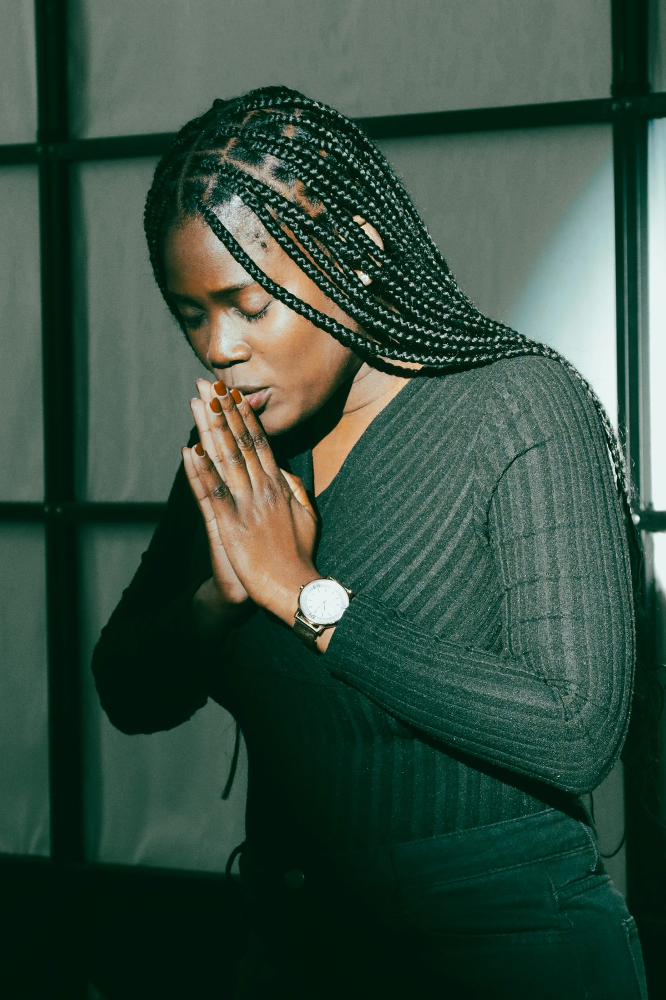
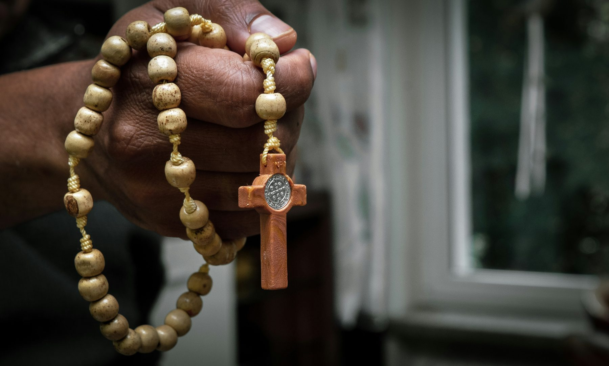
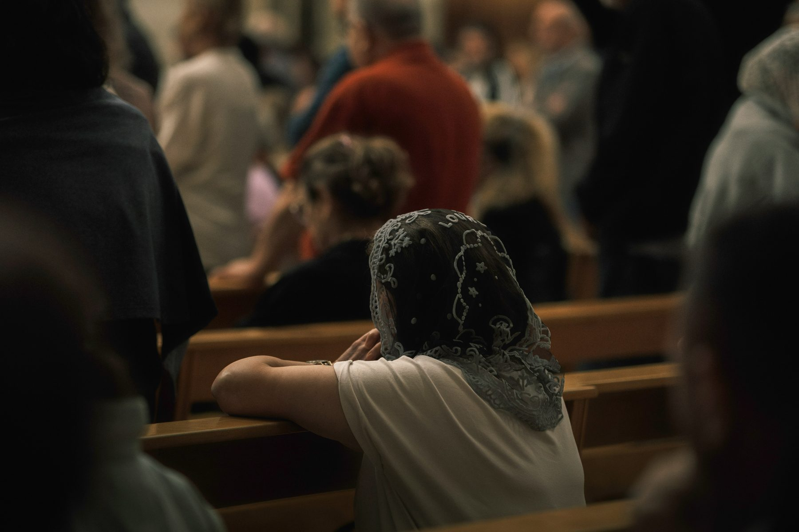

A Rosary a day for someone who can never thank you.
Prayer is where Strangers for Mary begins, and where it always returns. Every day of the week but Sunday, beads move through the fingers of strangers, and every one of them is moving for someone else.

Your week as a stranger.
Six days, six strangers, a full Rosary for each. Then Mass on Sunday.

Sun · Mass No Rosary assigned. Offer a Mass for one of the week's intentions.- 01You add your intention.Each week, before 6 pm on Sunday, you add one intention to the many already in the network. It travels with your baptism name and nothing more.
- 02We pass it on.We hand it to a series of strangers. Each day from Monday to Saturday, a different one takes their turn to pray a full Rosary for you.
- 03You pray for six.Every day you receive a new stranger's intention and pray a full Rosary for it. Six days, six strangers, every week.
- 04Sunday, at Mass.No Rosary is assigned on Sunday. Instead, you are encouraged to choose one of the week's intentions and offer a Mass for it.
- 05The chain keeps moving.While you hold another stranger's intention, someone else is holding yours with the same care.
Every decade is a gift from one stranger to another.


We carry what is not ours to carry.
At the wedding at Cana, Mary noticed a need that was not hers. The wine had run out at someone else's feast. She did not wait to be asked. She carried it to her Son, and He answered. Every decade we pray for a stranger, we do the same: we take to Jesus a problem that was never naturally ours to carry.
The Rosary is simple enough for a child and deep enough for a lifetime. In it we walk with Mary through the life of her Son: his birth, his suffering, his rising, his glory. Alongside it, we keep the other Marian devotions the Church has treasured for centuries.
A gift with no way back to the giver.
Every intention carries a baptism name, but nothing that identifies the person behind it. In a network with a thousand Pauls and a thousand Marys, nobody can trace a prayer back to its owner. So the stranger you pray for can never thank you, and you never pray to be thanked. That is what keeps every gift pure.
A habit for every day, not a feeling for one.
Most of us do not stop believing. We just stop practising, one busy day at a time. A stranger waiting on your Rosary changes that. It gives every day a reason to pick up the beads, and a quiet strength against everything that pulls you away from Christ between Sundays.
A chain of prayer around the world that never breaks.
We dream of a day when every intention shared with us is prayed for, every day, by someone who loves Mary. When no hospital bed, exam hall, empty kitchen or broken heart goes unprayed for. When a whole generation of Catholics, in every country, grows up knowing how to pray daily, because a stranger once needed them to.
It starts with one Rosary. Yours.
Youkaris. A home for daily prayer.
Youkaris is the app that holds it all together. Each morning it hands you that day's stranger, keeps your place in the week and gently brings you back when life gets loud. It does not replace anything on your phone. It gives your daily prayer a home.
Questions people ask.

How long does it take?+
A Rosary takes about twenty minutes. Many people pray it on the way to work, before bed or with their family.
What can I share as an intention?+
Anything you would bring to Mary herself, kept short. Please leave out personal details and the long history of the problem, and do not name other people in full. A few honest words, offered in faith, are enough.
When do I add my intention?+
Once a week, before 6 pm on Sunday. Each stranger adds one intention per week.
Will anyone know it is mine?+
Your intention carries your baptism name, but nothing that identifies you. Because so many strangers share the same baptism name, nobody can tell whose intention they are holding.
What if I miss a day?+
Nothing bad happens. A missed day is never punished. It is flagged, so we know who might need support, and someone makes sure you get it.
Somebody is waiting for your Rosary.
They will never know it was you. They will never be able to thank you. They need you anyway.
Join the strangers